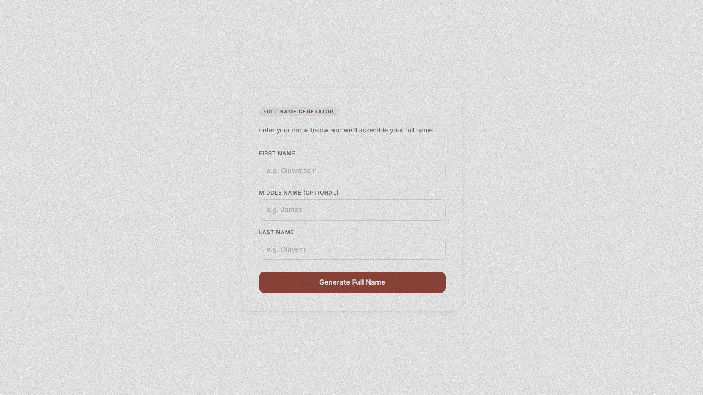

All projects
Every idea brought to life.
A selection of products, experiments, and tools built with clear user experiences and reliable engineering.

Next.js · Supabase · 5SIM API · Korapay
VerifyNG
Virtual phone number marketplace for global OTP verification.

Next.js · Fabric.js · TypeScript
Eduboard
Interactive whiteboard for teaching, drawing, and learning.

React · JavaScript · Firebase
Intern Scoreboard
A real-time leaderboard for managing and ranking student performance.

JavaScript · Speech Synthesis · Web Speech API
Voice Calculator
Scientific calculator with voice input and spoken results.

React · JavaScript
Fullname Generator
A simple tool that transforms names into polished full-name formats.